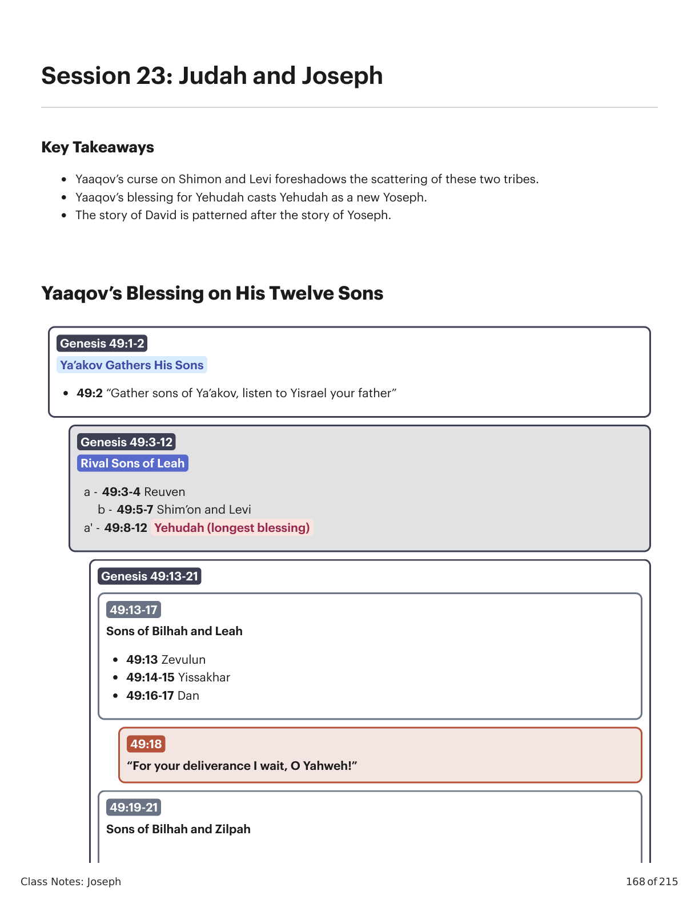

Gênesis 49:1-28. Design Literário por Tim Mackie para BibleProject Classroom: José (2022).Genesis 49:1-28. Literary Design by Tim Mackie for BibleProject Classroom: Joseph (2022).
"Estas são as tribos de Israel, e isto é o que seu pai lhes disse quando os abençoou.""These are the tribes of Israel, and this is what their father said when he blessed them."
11 E Yaaqov chamou seus filhos e disse: "Ajuntai-vos, e declar-vos-ei o que vos há de acontecer nos últimos dias."And Yaaqov called for his sons and said, "Gather together and let me tell you all, what will happen to you all at the end of days."
22 "Congregai-vos e ouvi, filhos de Yaaqov, e ouvi a Yisra'el vosso pai.""Gather and listen, sons of Yaaqov, and listen to Yisrael your father."
Gênesis 49 é uma cena de leito de morte onde o patriarca moribundo profere suas palavras finais aos seus filhos. Note o desenho simétrico do capítulo. Nas extremidades externas estão os quatro primeiros filhos de Leia, com Yehudah recebendo a maior e mais significativa bênção. // A conclusão vem com os dois filhos de Raquel, com Yoseph recebendo a bênção mais robusta. Este desenho coloca Yehudah e Yoseph numa relação paralela, crucial para a estratégia geral do rolo de Gênesis.Genesis 49 is a deathbed scene where the dying patriarch utters his final words to his sons. Notice the symmetrical design of the chapter. On the outer ends are the first four sons of Leah, with Yehudah receiving the largest and most significant blessing. // The conclusion comes with the two sons of Rachel, with Yoseph receiving the most robust blessing. This design places Yehudah and Yoseph in a parallel relationship, which is crucial to the overall strategy of the Genesis scroll.
A premissa deste discurso é que uma pessoa próxima da morte tem clareza sobre assuntos que normalmente são opacos. Ao se aproximarem da fronteira entre o Céu e a Terra, elas conseguem ver o que está por vir e antecipar o futuro. Em seu leito de morte, Yaaqov reúne seus filhos e lhes oferece uma janela para o seu futuro.The premise of this speech is that a person near death has clarity on matters that are usually opaque. As they draw near to the border of Heaven and Earth, they can see what is to come and anticipate the future. On his deathbed, Yaaqov gathers his sons and offers them a window into their future.
Dentro das duas extremidades há listas correspondentes de três filhos. E no centro exato do capítulo há uma linha singular que se destaca no poema. Ela poderia ser uma declaração na boca de Yaaqov, ou poderia ser uma interrupção do narrador para comentar as duas bênçãos importantes, de Yehudah e de Yoseph. De todo modo, essa declaração central enquadra o poema inteiro como uma fonte de esperança para as gerações futuras, que veem nessas bênçãos a promessa de uma futura libertação para sua família.Inside of the two ends are matching lists of three sons. And in the very center of the chapter is an odd line that sticks out in the poem. It could be a statement in the mouth of Yaaqov, or it could be an interruption from the narrator to comment on the two important blessings for Yehudah and Yoseph. Either way, this central statement frames the entire poem as a source of hope for future generations who see in these blessings a promise of future deliverance for their family.
Gênesis 49:3-12. Design Literário por Tim Mackie para BibleProject Classroom: José (2022)Genesis 49:3-12. Literary Design by Tim Mackie for BibleProject Classroom: Joseph (2022)
33 ReuvenReuven, tu és meu primogênito,, you are my first-born,
minha força e o princípio do meu vigor.my strength and the beginning of my vigor.
ExcelenteExcelling em dignidade, in dignity,
e and excelenteexcelling em in forçastrength
44 incontrolável como águas,uncontrollable like water,
não you will excelerásnot excel!!
a'a' Porque Because subisteyou went up (עָלִיתעָלִית) ao on the leitobed de teu pai of your father
bb então profanaste o then you profaned meu leitomy couch — —
a'a' ao to meu leitomy couch ele subiu!he went up!
55 Shim'on e LeviShim'on and Levi, irmãos;, brothers;
suas astutas maquinações são armas de violência.their schemes are weapons of violence.
66 Não entre minha vida no concílio deles,Into their council may my life not enter,
à sua assembléia não se ajunte minha honra;to their assembly may my honor never be joined;
pois na Because in sua iratheir anger mataram homens, they murdered men,
e no and in seu prazertheir pleasure jarretaram bois. they hamstrung oxen.
77 Maldito o Cursed be seu rancortheir anger, porque é for it is fortestrong
e o and seu furortheir wrath, porque é cruel., because it is harsh.
Dividi-los-ei entre Ya'aqov,I will divide them up among Ya'akov,
e os espalharei em Yisra'el.and I will scatter them among Yisra'el.
aa 88 YehudahYehudah, quanto a ti, , as for you, teus irmãos te louvarãoyour brothers will praise you (יוֹדוּךְיוֹדוּךְ)..
bb Tua mãoYour hand (יָדְךָיָדְךָ) estará sobre a nuca dos teus will be on the neck of your inimigosenemies (אֹיְבֶיךָאֹיְבֶיךָ),,
a'a' os filhos de teu paithe sons of your father (אָבִיךָאָבִיךָ) se curvarão a ti. will bow down to you.
aa 99 Um filhote de leãoA cub of a lion é Yehudahis Yehudah
bb da presa, meu filho, from the prey, my son, subisteyou have gone up (עָלִיתעָלִית)..
a'a' Ele se agacha, deita-se como um He crouches, he lies down, like a leãolion,,
b'b' e como um and like a leão novoyoung lion, , quem o fará levantar?who will make him rise up?
33 "Reuven, tu és meu primogênito, minha força e o princípio (רֵאשִׁית, reishit) do meu vigor... excelente em dignidade e excelente em poder.""Reuven, you are my first-born, my strength and the beginning (רֵאשִׁית) of my vigor... excelling in dignity, and excelling in strength."
44 "Incontrolável como águas, não excelerás! Porquanto subiste (עָלִיתָ, alita) ao leito de teu pai, então profanaste o meu leito — ao meu leito ele subiu!""Uncontrollable like water, you will not excel! Because you went up (עָלִיתָ) on the bed of your father, then you profaned my couch — to my couch he went up!"
"Meu primogênito" ativa o padrão de "reversão do primogênito": as bestas (Gn 1-2), Caim (Gn 4), Jafet (Gn 9-10), Ismael (Gn 21), Yaaqov (Gn 25, 27), e Yehudah/Yoseph. "Subiste ao leito de teu pai" refere-se à história de Gênesis 35:22: "Aconteceu que, enquanto Israel habitava naquela terra, Rúben foi e deitou-se com Bila, a concubina de seu pai, e Israel o soube." Essa foi a tentativa de Rúben de tomar o poder, ao dormir com a escrava da esposa favorita de Yaaqov, Raquel, após sua morte. Embora Yaaqov não amaldiçoe Reuven, certamente não lhe transmite a bênção da primogenitura."My firstborn" activates the "reversal of the firstborn" pattern: the beasts (Gen 1-2), Cain (Gen 4), Japheth (Gen 9-10), Ishmael (Gen 21), Yaaqov (Gen 25, 27), and Yehudah/Yoseph. "You went up on the bed of your father" is a reference to the story in Genesis 35:22: "It came about while Israel was dwelling in that land, that Reuven went and lay with Bilhah, his father's concubine, and Israel heard." This was Reuven's grab for power by sleeping with the slave of Yaaqov's favorite wife Rachel after she died. While Yaaqov does not curse Reuven, he certainly does not pass on the firstborn blessing to him.
Observe como Yaaqov descreve Reuven usando a imagética e a linguagem de Gênesis 1.Notice how Yaaqov describes Reuven using the imagery and language of Genesis 1.
A palavra "princípio" (ראשית, reishit) e "águas incontroláveis" lembra "tohu vavohu" (Gn 1:2).The word "beginning" (ראשית, reishit) and "uncontrollable waters" recalls "tohu vavohu" (Gen. 1:2).
O Cronista refletiu sobre esta história e a recontou desta maneira.The Chronicler reflected back on this story and retold it in this way.
11 Ora, os filhos de Reuven, o primogênito de Israel (pois ele era o primogênito, mas porque profanou o leito de seu pai, o seu direito de primogenitura foi dado aos filhos de Yoseph, filho de Israel; de modo que ele não está registrado na genealogia segundo a primogenitura.Now the sons of Reuven the firstborn of Israel (for he was the firstborn, but because he defiled his father's bed, his birthright was given to the sons of Yoseph the son of Israel; so that he is not enrolled in the genealogy according to the birthright.
22 Embora Yehudah prevalecesse sobre seus irmãos, e dele viesse o líder, ainda assim o direito de primogenitura pertencia a Yoseph)Though Yehudah prevailed over his brothers, and from him came the leader, yet the firstborn right belonged to Yoseph)
*Palavras-chave adaptadas pelo professor*Key Words Adapted by Teacher
“Embora Rúben seja o filho biologicamente mais velho, os direitos de status que lhe correspondiam foram transferidos para José. Ainda assim, mesmo José realizou esse direito de primogenitura apenas até certo ponto, já que ‘Judá tornou-se forte entre seus irmãos.’ O autor sugere aqui, então, três níveis de prioridade entre os filhos de Jacó: o primogênito biológico, o mais velho legalmente nomeado, e aquele que exercia a autoridade de fato. … Em plena concordância com sua visão geral de mundo, o Cronista explica a perda da primogenitura de Rúben como um castigo pelo pecado, uma convicção teológica que é apresentada como interpretação de textos de Gênesis. … A transferência da primogenitura para José é o segundo estágio do percurso midráshico. A implicação jurídica das palavras de Jacó em Gênesis 48:5, ‘E agora, teus dois filhos … Efraim e Manassés serão meus, como Rúben e Simeão o são,’ é que esses filhos de José são elevados ao status de plena participação entre as tribos de Israel. Em termos de herança, a porção de José na herança de Jacó foi aumentada de uma parte (que teria sido dividida entre seus descendentes) para duas.”“While Reuben is the biological oldest son, his corresponding rights of status were transferred to Joseph. Yet, even Joseph realized this birthright only to a certain extent, since ‘Judah became strong among his brothers.’ The author here suggests, then, three levels of priority among the sons of Jacob: the biological firstborn, the legally nominated elder, and the one who wielded actual authority. … In full accord with his general world-view, the Chronicler explains Reuben’s loss of his birthright as a punishment for sin, a theological conviction which is presented as an interpretation of texts in Genesis. … The transfer of the birthright to Joseph is the second stage of the midrashic course. The legal implication of Jacob’s words in Genesis 48:5, ‘And now, your two sons … Ephraim and Manasseh shall be mine, as Reuben and Simeon are,’ is that these sons of Joseph are raised to the status of full membership among the tribes of Israel. In terms of inheritance, Joseph’s portion in Jacob’s inheritance was increased from one part (which would have been divided among his descendants) to two.” Japhet, Sara (2013). I & II Crônicas: Um Comentário. Westminster John Knox Press. 133.Japhet, Sara (2013). I & II Chronicles: A Commentary. Westminster John Knox Press. 133.
55 "Shim'on e Levi, irmãos; suas adagas são instrumentos de violência.""Shimon and Levi, brothers; their schemes are weapons of violence."
66 Não entre minha vida no concílio deles; à sua assembléia não se ajunte minha honra; pois na sua ira mataram homens, e no seu prazer jarretaram bois.Into their council may my life not enter, to their assembly may my honor never be joined; Because in their anger they murdered men, and in their pleasure they hamstrung oxen.
77 "Maldito (אָרוּר, arur) seja a sua ira, porque é forte, e a sua ira, porque é cruel... dividi-los-ei (חָלַק, chalaq) em Ya'aqov, e os espalharei (פּוּץ, puts) em Yisra'el.""Cursed (אָרוּר) be their anger for it is strong, and their wrath, because it is harsh... I will divide (חָלַק) them among Ya'aqov, and scatter (פּוּץ) them among Israel."
O poema reflete Gênesis 34, onde Shim'on e Levi lideraram o massacre dos cananeus em Shkhem — até o vocabulário está ligado ("em sua ira" // Gn 34:7). A maldição (אָרוּר) os coloca em analogia com Caim (Gn 4:11) e Cam (Gn 9:25), que agiram vergonhosamente ou assassinamente contra membros de sua própria família e foram exilados e amaldiçoados.The poem reflects back on the narrative of Genesis 34, where Shimon and Levi led the massacre of the Canaanites in Shkhem. Even the vocabulary is linked to the narrative. The curse (אָרוּר) brought on Levi and Shimon sets them on analogy with Cain (Gen. 4:11) and with Ham (Gen. 9:25), who acted shamefully or murderously against their own family members and were exiled and cursed.
É importante notar, no entanto, que a maldição sobre Levi é revertida no monte Sinai, no episódio do bezerro de ouro, onde a violência de Levi lhe rende uma "bênção" (Êx 32:29) ao executar os idólatras que adoraram o bezerro de ouro.It is important to note, however, that the curse on Levi is reversed at Mount Sinai in the golden calf debacle, where Levi's violence earns him a "blessing" (Exod. 32:29) as he executes the idolators who worshipped the golden calf.
O padrão do "assassinato por ira" é ativado aqui, ligando Shim'on e Levi a Caim, Lameque, Esaú e aos irmãos de Yoseph.The "angry murder" pattern is activated here, linking Shimon and Levi to Cain, Lamech, Esau, and the brothers of Yoseph.
Yaaqov diz que Shim'on e Levi serão "espalhados" (פוץ) e "divididos" (חלק). Estas são as mesmas palavras associadas à divisão das nações durante o episódio da Babilônia (ver Gn 11:8-9 e Dt 32:8-9). Isso se reflete na versão bíblica da história de Israel, em que Levi é separado das tribos e não é contado entre elas. Quanto a Shim'on, depois que as tribos entram na terra sob a liderança de Josué, a tribo de Shim'on nunca mais é mencionada (sua aparição em Juízes 1:3, 17 é a última na Torá e nos Profetas Anteriores).Yaaqov says that Shimon and Levi will be "scattered" (פוץ) and "divided" (חלק). These are the same words associated with the division of the nations during the Babylon debacle (see Gen. 11:8-9 and Deut. 32:8-9). This is reflected in the biblical version of Israel's history, where Levi is selected out of the tribes and not counted among them. As for Shimon, after the tribes go into the land under the leadership of Joshua, the tribe of Shimon is never heard of again (their appearance in Judges 1:3, 17 is their last in the Torah-Former Prophets).
88 Yehudah, quanto a ti, teus irmãos te louvarão (יודוך, yodukha); tua mão (ידך, yadekha) estará sobre a nuca de teus inimigos (איביך, oyvekha); os filhos de teu pai (אביך, avikha) se curvarão a ti.Yehudah, as for you, your brothers will praise you (יודוך); Your hand (ידך) will be on the neck of your enemies (איביך), the sons of your father (אביך) will bow down to you.
99 Cachorrinho de leão é Yehudah; da presa, meu filho, subiste (עלית, alita). Ele se agacha, deita-se como leão, e como leão novo, quem o fará levantar?A cub of a lion is Yehudah; from the prey, my son, you have gone up (עלית). He crouches, he lies down, like a lion, and like a young lion, who will make him rise up?
1010 O cetro não se arredará de Yehudah, nem o bastão de governante de entre seus pés, até que venha aquele a quem pertence, e a obediência dos povos será dele.The scepter will not depart from Yehudah, nor the ruler's staff from between his feet, unto when he comes to whom it belongs, and the obedience of the peoples will belong to him.
1111 Atando o seu jumento à vide, e o filho de sua égua ao ramo da videira; ele lava as suas vestes no vinho, e a sua roupa no sangue das uvas.Binding his donkey to the vine, and a son of his mare to the offshoot, he washes his clothing in wine, and his robe in the blood of grapes.
1212 Os olhos brilham de vinho, e os dentes brancos de leite!Eyes sparkle from wine, and teeth white from milk!
A bênção de Yehudah o lança como um novo Yoseph — ambos os filhos amados de Raquel cujos irmãos se curvaram diante deles. Esta é a base para a história de Davi, que é modelada segundo o padrão de Yoseph: o filho amado que desce, sofre, e é exaltado para salvar seu povo.Yehudah's blessing casts him as a new Yoseph — both beloved sons of Rachel whose brothers bowed before them. This is the foundation for the story of David, patterned after Yoseph: the beloved son who descends, suffers, and is exalted to save his people.
De que maneiras a história de Davi segue o padrão da história de Yoseph?What are some of the ways the story of David follows the pattern of the Yoseph story?